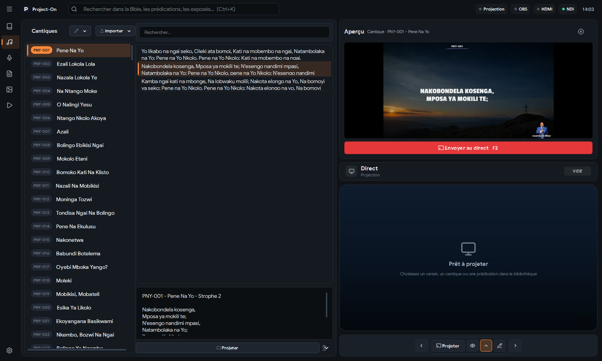
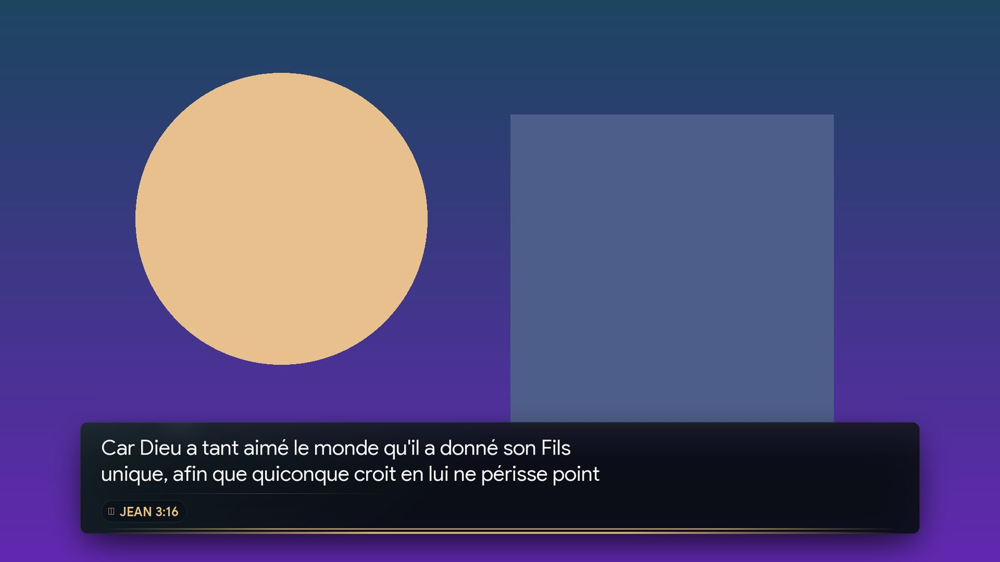
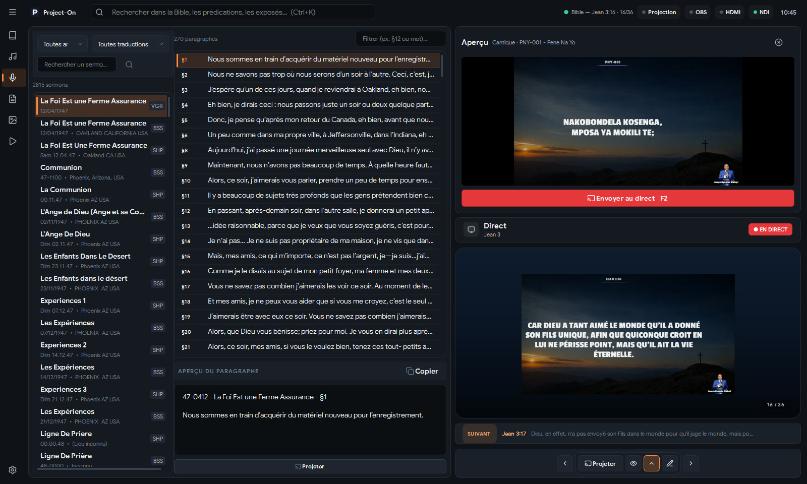
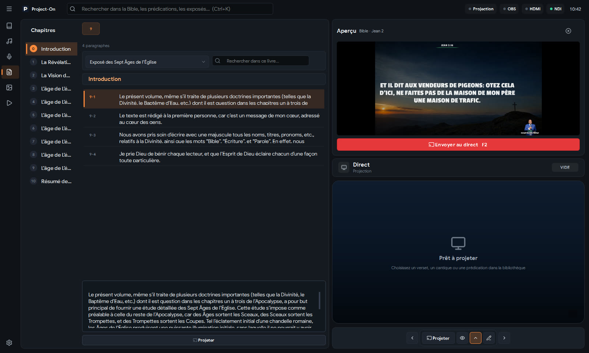
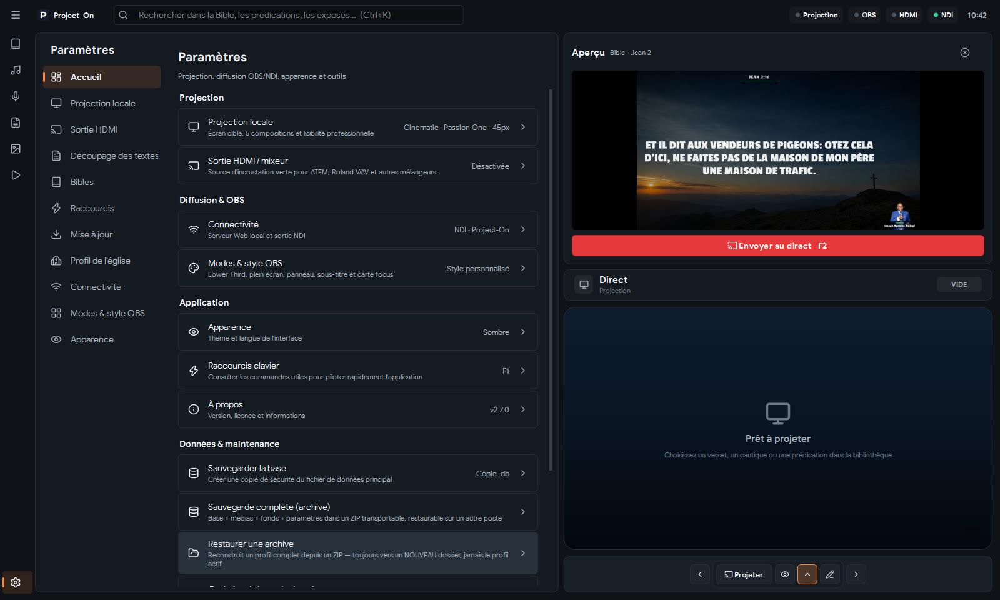

La Bible dans votre langue
7 Bibles libres fournies, 15 à télécharger, et l'import de versions en lingala, swahili ou tshiluba.
Logiciel de projection pour églises
Bible, cantiques, prédications et exposés à l'écran, dans OBS et sur le mélangeur, en même temps. Un clic prépare, F2 envoie. Entièrement hors ligne.
Gratuitversion 2.7.2 · environ 500 Mo

Fonctions
Du premier chant de louange à la fin de la prédication, Project-On suit le culte.
7 Bibles libres fournies, 15 à télécharger, et l'import de versions en lingala, swahili ou tshiluba.
Bibliothèque par strophes, refrain répété tout seul, import OpenLyrics, OpenSong et CCLI SongSelect.
Des sections avec leurs heures prévues, et l'avance ou le retard en direct.
Un bandeau sobre et lisible, le même sur OBS, NDI et HDMI, avec plusieurs looks selon la scène OBS.
Le texte sur fond de clé chroma pour ATEM ou Roland, avec une mire de calibrage.
Après une coupure de courant, Project-On reprend où il en était. Un contrôle avant culte vérifie tout.
Tapez « Jean 3:16 » ou quelques mots : Bible, prédications, exposés, médias et playlists.
Écran d'accueil, orateur du jour, QR code des réseaux, images de citations et miniatures YouTube.
Tout ce qui est passé à l'écran, exporté en tableur, sous-titres SRT et images pour le montage.
Projection
Transitions fondu, glissement, zoom, flou et révélation, zoom lent sur les fonds, et vidéos en boucle derrière les paroles.

OBS
Depuis la 2.7.1, le verset ou le cantique arrive dans un petit bandeau de chaîne télé : fond sombre, texte blanc, référence dorée, dans la zone de sécurité et lisible sur n'importe quelle vidéo. Le même style sur OBS, NDI et HDMI, et Project-On peut même changer les scènes OBS à votre place.

Captures



Caractéristiques
FAQ
Oui, pour toutes les églises, sans limite de durée. Pgraphics est gratuit lui aussi et complète votre régie.
Cliquez sur « Informations complémentaires » puis « Exécuter quand même ». C'est normal pour un logiciel d'un jeune éditeur.
Oui : Réglages ▸ Bibles ▸ importer un fichier Zefania, Beblia ou JSON, pour une version dont l'église a les droits.
Oui. L'installateur conserve votre base, vos playlists et vos réglages. La mise à jour est intégrée au logiciel.
Project-On affiche les textes. Pgraphics, gratuit lui aussi, ajoute le nom du pasteur, votre logo et des bandeaux animés.